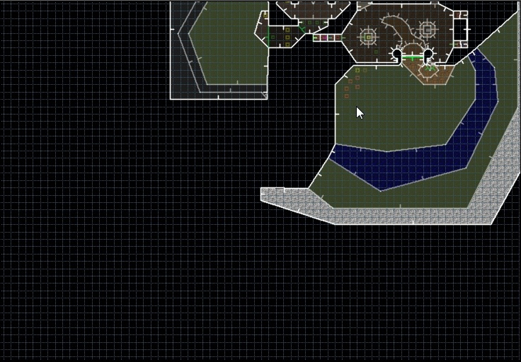
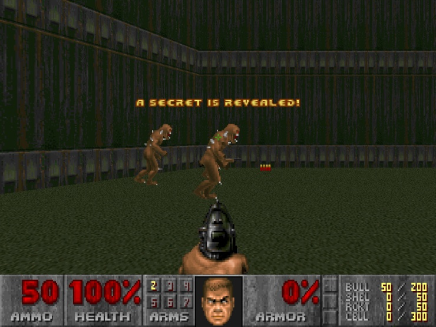
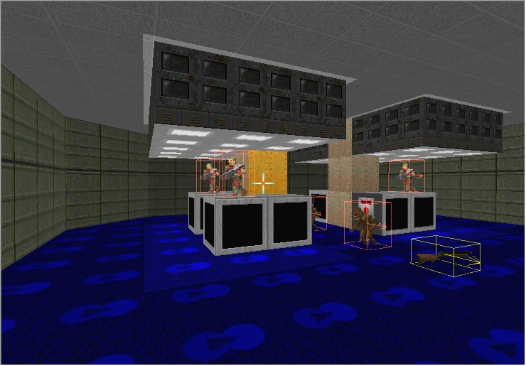
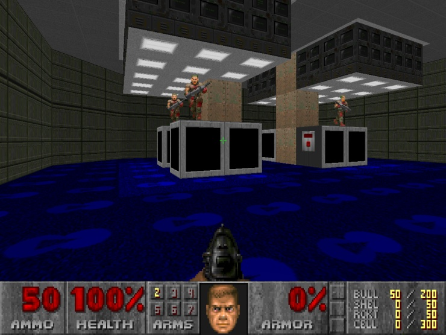

GZDB allows you to test a map from any valid place in a map. Here's how it works:
Let's say you want to inspect that secret area in (G)ZDoom:

Move mouse cursor to the position you want to appear in the game, then use "Test map from current position" action (default key is Ctrl-F9). You will appear there:

This works from Visual mode as well. You will appear at Visual camera position:

